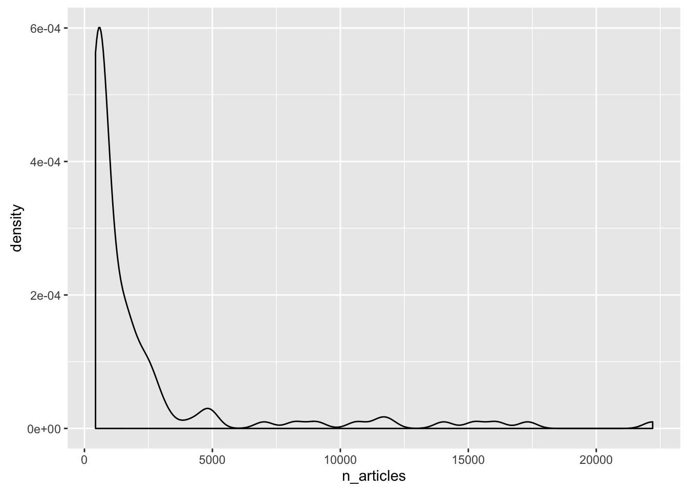
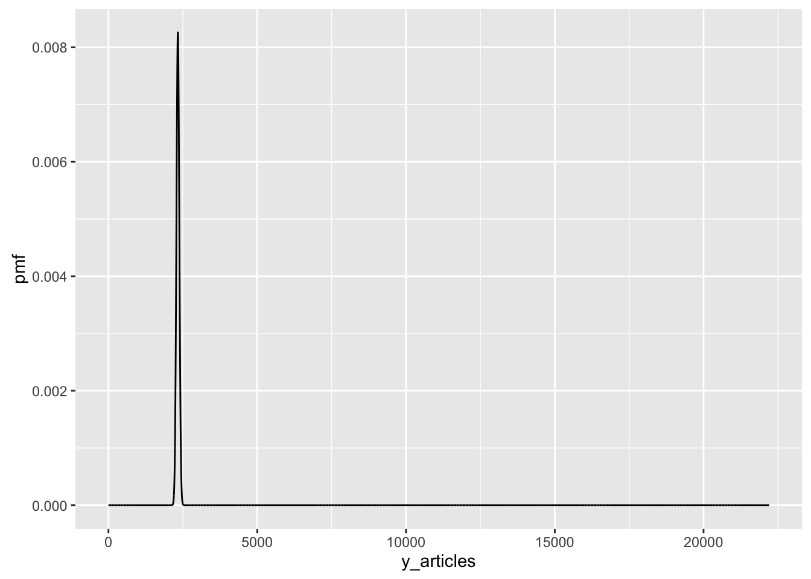

POL S/CS&SS 501, University of Washington, Winter 2016
$$ \DeclareMathOperator{\mean}{mean} \DeclareMathOperator{\var}{var} \DeclareMathOperator{\E}{E} \DeclareMathOperator{\MSE}{MSE} \DeclareMathOperator{\Bias}{Bias} \DeclareMathOperator{\SE}{se} \DeclareMathOperator{\SD}{sd} \DeclareMathOperator{\argmin}{argmin} \DeclareMathOperator{\argmax}{argmax} $$Probability and Distributions in R
Andreu Casas
January 29, 2016
Learning Objectives
- What are probabilities and different types of distributions
- How to use them in R
We will use the gapminder dataset to better understand sampling uncertainty:
- Subset only the observations in gapminder from 2007 (imagine this is the population: all existing countries)
- Calculate the mean and standard deviation of lifeExp
- Subset 10 random countries from the 2007 dataset
- Calculate the mean and standard deviation of lifeExp for those 10 obs.
NOTE: need to discuss what set.seed does. A brief note on how computers (for statistics) use pseudo-random numbers.
library(dplyr)
library(gapminder)
data(gapminder)
set.seed(123)data2007 <- gapminder %>%
filter(year == "2007")
x <- mean(data2007$lifeExp)
s <- sd(data2007$lifeExp)
random_10_countries <- sample(gapminder$country, 10)
data2007_10 <- data2007 %>%
filter(country %in% random_10_countries)
x_hat <- mean(data2007_10$lifeExp)
s_10 <- sd(data2007_10$lifeExp)For a particular case (since we randomly sample 10 countries, each time we repeat the analysis we get slightly different results) we obtain that:
| Mean | SD | |
|---|---|---|
| Population | 67.01 | 12.07 |
| Sample | 65.50 | 14.59 |
Need to start with the basics. All R distribution functions have 4 functions. E.g. for the normal distribution?
- rnorm: draw random numbers
- dnorm: density P(X)
- pnorm: cdf P(X x)
- qnorm: quantile function x s.t. P(X x) = q.
Probability and Distributions in R
How many heads and how many tails would we get if we flip a fair coin 10 times?
flips_10 <- sample(x = c('head','tails'), size = 10, replace = TRUE)
table(flips_10)## flips_10
## head tails
## 5 5According to the last (Jan. 26, 2016) polls-only forecast of FiveThirtyEight, Donald Trump has a 55% probability of winning the Iowa caucuses.
Challenge
How can we simulate the Iowa caucuses to make one prediction of Trumps’s victory/loss? What type of distribution represents this outcome variable?
# Bernoulli Distribution: a Bernoulli Trial
trump_result <- rbinom(size = 1, # Number of trials
n = 1, # Number of observations
p = .55) # Probability of succes on each trial
print(c("Trump Loses :(", "Trump Wins! :)")[trump_result + 1])## [1] "Trump Loses :("Challenge
How can we simulate Trump’s victory or loss in Iowa 10 times using R? What type of distribution represents this outcome variable?
# Binomial Distribution: N draws from a Bernoulli distribution
trump_result_10 <- rbinom(size = 10, # Number of trials/draws
n = 1, # Number of observations (e.g. 0-1)
p = .55) # Probability of succes on each trial
print(paste("Trump wins the election in",trump_result_10,"of the simulations"))## [1] "Trump wins the election in 5 of the simulations"Now we will use the country.csv dataset we used in previous labs.
library(ggplot2)
country <- read.csv("data/country.csv")Remember that this is a simplified dataset for the Baum and Zhukov’s (2015) JPR article where the variable n_articles is the number of news stories that newspapers from these countries dedicated to talk about the Lybian Civil Crisis.
Lets plot the distribution of the variable n_articles using a density plot.
ggplot(country, aes(x = n_articles)) +
geom_density()
Challenge
What type of distribution does the variable n_articles have? (Hint: distribution for a variable of nonnegative integers)
Poisson Distribution: Poisson(\(\lambda\)) = E(Y) = Var(Y) = \(\lambda\)
Let’s plot a Probability Mass Function (PMF) of a Poisson distribution with the mean of n_articles. Do you think this PMF is similar to the distribution of n_articles we previously plot?
n_articles_mean <- mean(country$n_articles)
y_articles <- 1:max(country$n_articles)
pmf <- dpois(y_articles, lambda = n_articles_mean)
pmf <- data.frame(pmf)
ggplot(pmf, aes(x = y_articles, y = pmf)) + geom_line()

This work is licensed under a Creative Commons Attribution-NonCommercial-ShareAlike 4.0 International License. R code is licensed under a BSD 2-clause license.